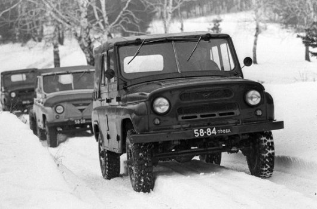
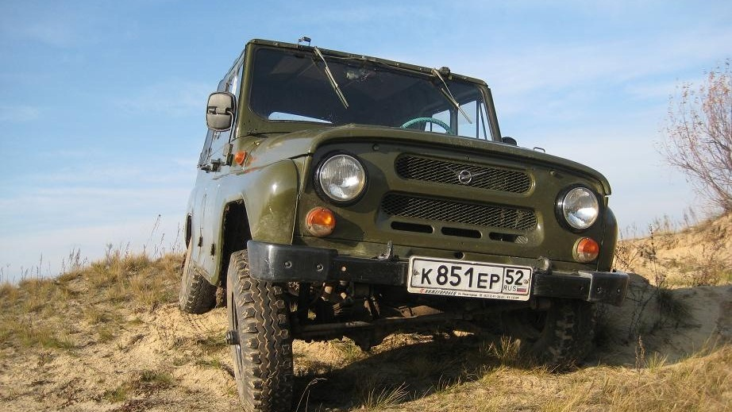

История создания автомобиля УАЗ 469 и 3151 .
22 Июня, 2018
Чем военный УАЗ отличался от своей мирной копии?
Прежде чем говорить о конкретных моделях автомобилей УАЗ, разработанных или доработанных специально для армии, стоит сказать, что Ульяновский автомобильный завод, в целом, в своей деятельности был нацелен на то, чтобы удовлетворить потребности Министерства обороны. Гражданские автомобили УАЗ – это, грубо говоря, побочный эффект, особенно в советское время. В условиях же свободного рынка автомобилестроителю не оставалось ничего лучшего, как перестроить мощности на удовлетворение запросов «мирных» клиентов. Но даже сейчас УАЗ активно сотрудничает с государством, поставляя для армии автомобили высокой проходимости.
История военного УАЗа началась в середине 20-го века. В первую очередь к армейский моделям этой марки автомобиля следует отнести УАЗ-469 и УАЗ-3151. Именно УАЗ-469 стал к 70-м годам 20-го века основным авто для командования в странах Восточной Европы, входивших в блок Варшавского договора. Его предшественником в упомянутой роли до этого был ГАЗ-69. В 1964 году было произведено несколько опытных моделей, на основании которых в 1972 году начался серийный выпуск УАЗ-469 и УАЗ-469Б. В 1985 году начали производить УАЗ-3151. А с 2003 года выпускается УАЗ-315195 Хантер, который в 2010 году, к 65-ти летию Победы в ВОВ модернизировали и выпустили в ограниченной серии под индексом 315196.
История развития военного УАЗа.
Выше было отмечено, что первые опытные модели УАЗа-469 были выпущены в 1964 году. Однако, разработки начали вести еще в 50-х годах 20 века. Первый образец, названный УАЗ-460 был сконструирован в 1958 году. За основу, видимо, был взят американский Джип. Советская машина получилась мощной, способной перевозить людей и грузы по внедорожью, а также тянуть за собой прицепы и легкие орудия. Но удобностью и комфортом автомобиль похвастаться не мог. В 1964 году была выпущена пробная партия доработанных авто, получивших названия УАЗ-469. Кстати, в автомобильной прессе, уже на следующий год, можно было встретить изображение данной машины и узнать о некоторых технических характеристиках. Это удивительно, если учитывать тот факт, что в серийное производство машин начнется только лишь спустя 8 лет. Базой для УАЗа-469 образца 1972 года стала надежная и передовая для тех лет 21-я Волга. Возможности УАЗа восхищают и удивляют. Например, в 1974 году несколько машин в базовой комплектации, то есть без антипробуксовочных цепей, лебедок и прочего, смогли подняться на один из ледников Эльбруса, на высоту 4,2 километра. В 1985 году армейский внедорожник от Ульяновского автозавода начал выпускаться под названием УАЗ-3151.История УАЗ-469 заканчивается в начале 21-го века. В 2010 году выпускается ограниченная партия УАЗ-315196, который имеет ГУР, пружинную подвеску, дисковые передние тормоза, 112-сильный двигатель, разрезные мосты Тимкен. А уже в 2011 году данная модель исчезает с рынка, в связи с тем, что указанная партия в 5000 машин полностью распродана. УАЗ, в плане армейских автомобилей, начинает специализироваться на модели Хантер Классик.
Технические характеристики модели 469
кузов — стальной, открытый;
тип — рамный кабриолет-универсал;
количество мест — 7;
количество дверей — 5;
длина — 4025 мм;
ширина — 1805 (1785) мм;
высота — 2050 (2015) мм;
база — 2380 мм;
клиренс(просвет) — 300 (220) мм;
масса без нагрузки — 1600 (1540) кг;
масса с полной нагрузкой — 2400 (2280) кг;
объем топливных баков — 78 литров;
максимальная скорость — 90 (120) км/ч;
глубина преодолеваемого брода — 0,7 м;
максимальный преодолеваемый подъем при полной нагрузке — 31°.
Технические характеристики модели 3151

Максимальная скорость: 110 км/ч;
Расход топлива на 100км по городу: 14.5 л;
Объем бензобака: 78 л;
Снаряженная масса автомобиля: 1680 кг;
Допустимая полная масса: 2480 кг;
Объем двигателя: 2450 см3;
Мощность двигателя: 90 л.с.;
Количество оборотов: 4000;
Крутящий момент: 171.6/2200 н*м;
Система питания: Карбюратор;
Турбонаддув: нет;
Расположение цилиндров: Рядный;
Количество цилиндров: 4;
Диаметр цилиндра: 92 мм;
Ход поршня: 92 мм.
Интересные факты
1.Сборочные производства автомобилей УАЗ находятся в 7 странах мира.
2.В 2010 году модель УАЗ-469 стала обладателем уникального рекордакак самый вместительный легковой автомобиль: в его салонеразместилось 32 человека.
3.Завод в Ульяновске был построен из оборудования, эвакуированногов 1942 году из Москвы и является продолжением ЗИЛа.
4.В 1994 году Ульяновский автомобильный завод стал лауреатом престижной международной премии «Золотой глобус» за большой вклад в развитие экономики государства и интеграцию в мировое хозяйство.
Спасибо за прочтение сайта!!!